Worlds, not just portraits
Through mixed-media collage, entire worlds are crafted around your pet, turning them into the main character of a personalised fantasy.
Cosmic, intergalactic, custom-made portraits of your pets. Handmade collage, printed and framed, and personalised entirely to them.
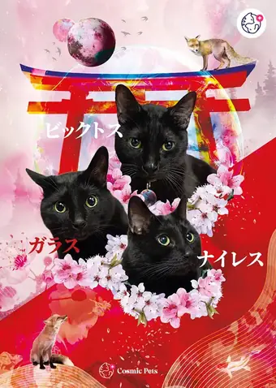
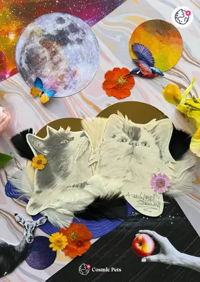
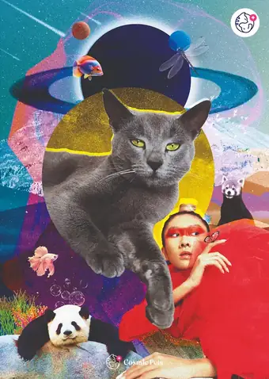
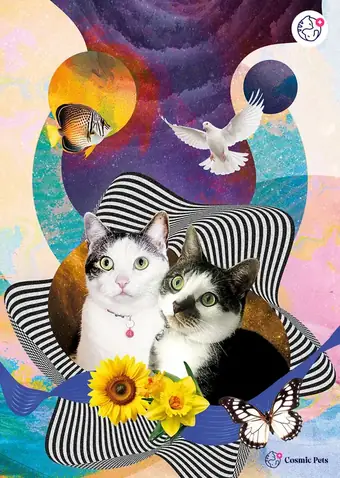
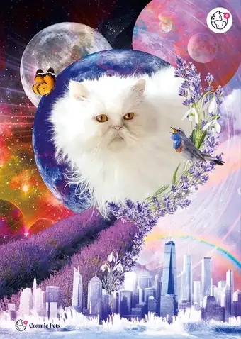
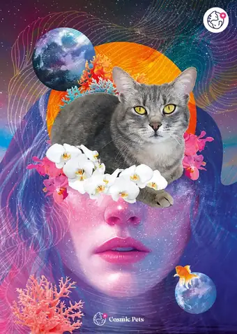
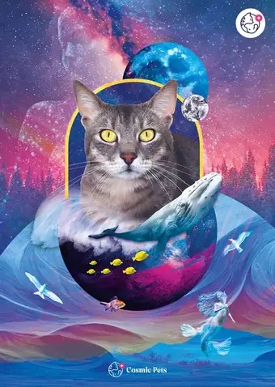
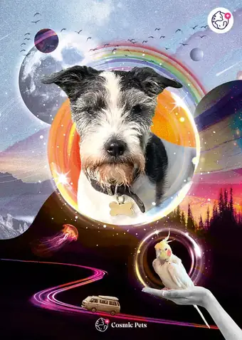
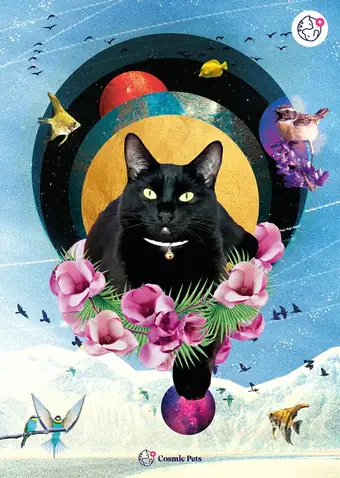
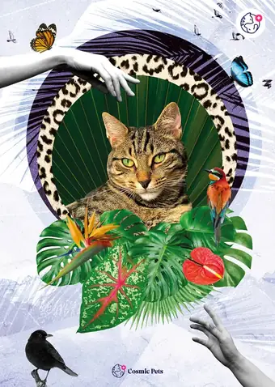
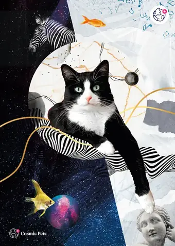
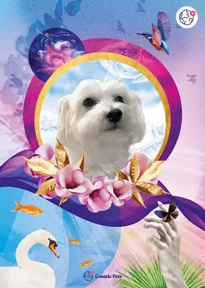
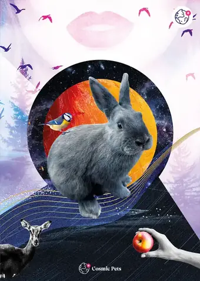
The Cosmic Crew
Fifteen very good boys, girls and one honorary bun-bun, each with a universe built entirely around them. Their humans told me their stories, and I made them the main character.
Why a Cosmic Pet
Through mixed-media collage, entire worlds are crafted around your pet, turning them into the main character of a personalised fantasy.
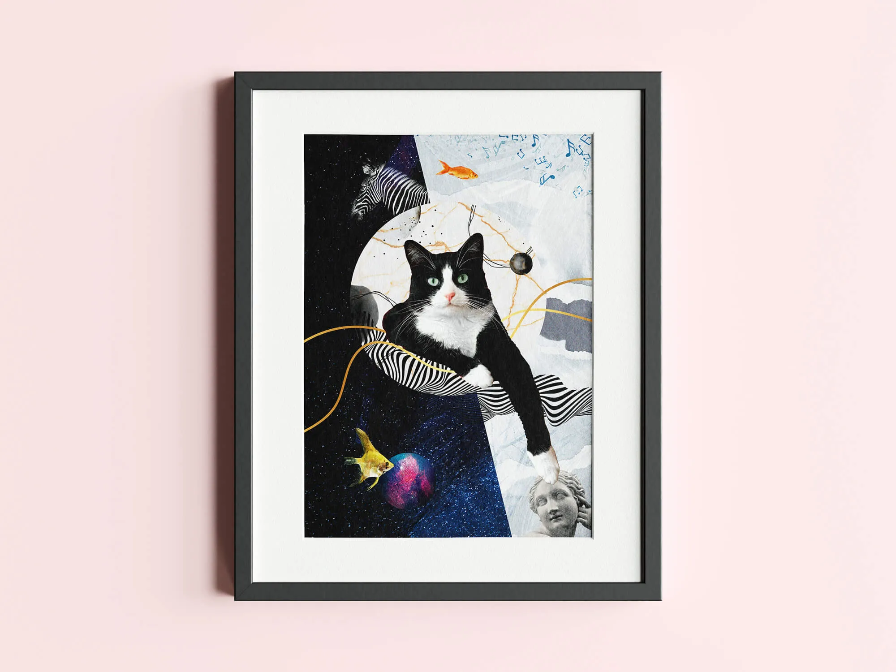
Add a sweet spot of colour and intergalactic fantasy to your home with a custom, one of a kind cosmic portrait.

A gift voucher for friends and family is a treat that always goes down well. All they have to do is send a photo of their pet, and I do the rest.
How it works
The process is simple, but please allow me a few days to transcend space and time in creating the perfect artwork for your beloved pet. I don’t use AI for your pet portrait, just pure imagination.
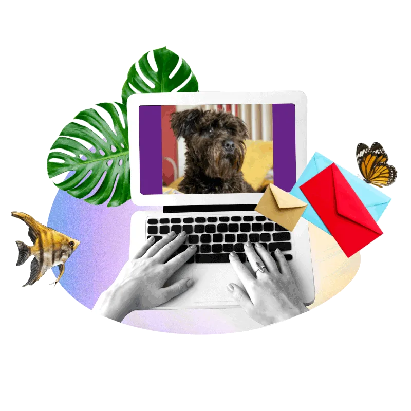
01Send a quick intro about yourself and your pet, along with a suitable photo. The photo guide shows you exactly what works.
 02
02
I get to work building your pet a world, and send you a preview within 5 working days.
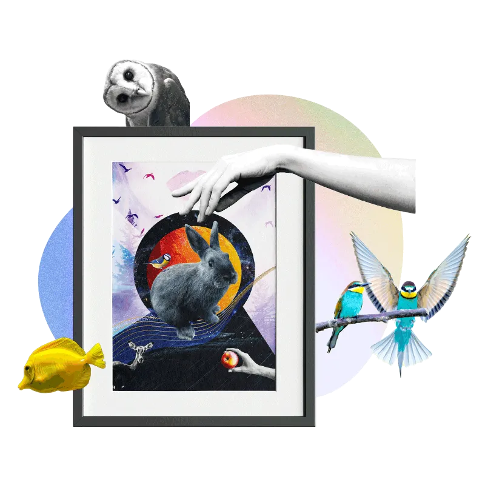
03If you are happy with your portrait, I print, frame and ship it to you.
Kind words
Cosmic Pets hopes to bring joy to the household and the home, so naturally I am over the moon to know that clients love their pet portraits.
Oh my god!! We love it so much!!! Thank you thank you! It’s just perfection!!! It’s 100% Polly’s world! Liv LOVES it! You’re fab.
I can’t express how amazing and beautiful this looks! The boys are part of such a beautiful atmosphere and you really captured Kyoto with them.
Thank you for making such a beautiful portrait of my boy. I love it so much and I love how personal it is to Skip and his story! I will be showing this to everyone who visits my house!
Omg, I LOVE it, that’s so cool, it’s insanely good. I cannot wait to print and frame it! I’m so happy with it, well done!
I think this is the most beautiful image I’ve ever seen. This is really awesome.
Impress your loved ones or treat yourself. Tell me about your pet and I will tell you what their world could look like.